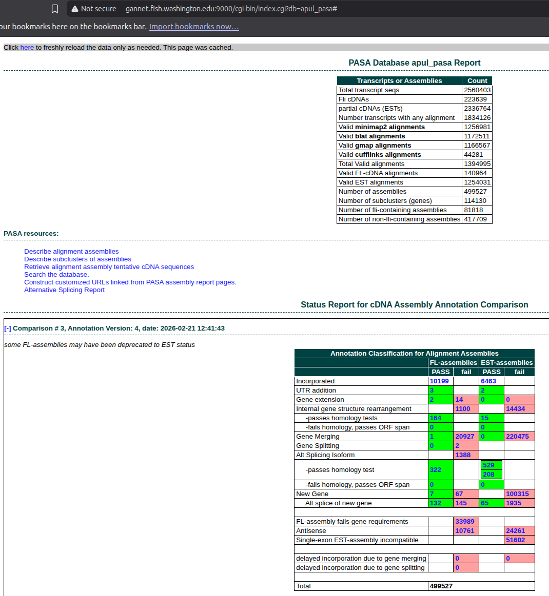

INTRO
This notebook performs a comprehensive transcriptome assembly and annotation for A.pulchra using the PASA (Program to Assemble Spliced Alignments), as part of the E5 timeseries_molecular project. This produced an updated genome annotation that incorporates the RNA-seq data, including alternative splicing information. However, it’s important to note that the resulting GFF/BED files will not contain any annotations from the original genome GFF which did not have any support from RNA-seq alignments!
Thus, the resulting PASA annotations will be a subset of the original genome annotations, but with updated gene models based on the RNA-seq data. The PASA pipeline will merge the de novo and genome-guided transcriptome assemblies, clean the transcripts, and update the genome annotations with alternative splicing information where supported by the data.
Due to large file sizes, the majority of important output files are not availabe on GitHub, but can be accessed on Gannet here:
Primary products:
- Trinity de-novo assembly FastA: https://gannet.fish.washington.edu/gitrepos/urol-e5/timeseries_molecular/D-Apul/output/00.30-D-Apul-transcriptome-assembly-Trinity/de_novo_assembly/apul-denovo-Trinity.fasta
- Trinity genome-guided assembly FastA: https://gannet.fish.washington.edu/gitrepos/urol-e5/timeseries_molecular/D-Apul/output/00.30-D-Apul-transcriptome-assembly-Trinity/genome_guided_assembly/apul-GG-Trinity.fasta
- PASA final GFF: https://gannet.fish.washington.edu/gitrepos/urol-e5/timeseries_molecular/D-Apul/output/00.30-D-Apul-transcriptome-assembly-Trinity/PASA/apul-PASA.gff3
- PASA final BED: https://gannet.fish.washington.edu/gitrepos/urol-e5/timeseries_molecular/D-Apul/output/00.30-D-Apul-transcriptome-assembly-Trinity/PASA/apul-PASA.bed
The markdown below was produced from the original Rmd script:
Not described below is the access to the PASA web portal, which allows the user to browse the PASA results in a user-friendly interface. This can be accessed here:
- http://gannet.fish.washington.edu:9000/
Enter apul_pasa as the database name. If this is your first time using the database, it will take many minutes for the data to load (the MySQL files behind the scenes are ~10GB in size, so it takes a while to process). After initial acces, the data is cached and access is much faster.

1 BACKGROUND
This notebook performs a comprehensive transcriptome assembly and annotaiton for A.pulchra using the PASA (Program to Assemble Spliced Alignments) pipeline, as well as alternative isoform identification. This pipeline relies on both de novo and genome-guided transcriptome assemblies with Trinity.
The key steps include: 1. De Novo Assembly and Genome-Guided Assembly: Using Trinity to assemble transcripts directly from RNA-seq reads. 2. PASA Pipeline: Utilizing PASA to merge the assemblies, clean transcripts, and update genome annotations with alternative splicing information.
Programs Used: - Trinity - Transcriptome assembly. - PASA - Annotation update and transcript assembly refinement. - AGAT - GFF/GTF toolkit for annotation merging and conversion. - Singularity (Apptainer) - Container platform used to run assembly pipelines.
1.1 Expected outputs
TRINITY:
- FastA: De novo transcriptome assembly.
- FastA: Genome-guided transcriptome assembly.
PASA:
- GFF3: Genome annotations produced by PASA pipeline in GFF3.
- BED: Genome annotations produced by PASA pipeline in BED format.
2 SETUP
2.1 Libraries and markdown settings
library(knitr)
knitr::opts_chunk$set(
echo = TRUE, # Display code chunks
eval = FALSE, # Evaluate code chunks
warning = FALSE, # Hide warnings
message = FALSE, # Hide messages
comment = "" # Prevents appending '##' to beginning of lines in code output
)2.2 Set variables
# DIRECTORIES
top_output_dir <- file.path("..", "output")
output_dir <- file.path(top_output_dir, "00.30-D-Apul-transcriptome-assembly-Trinity")
de_novo_output_dir <- file.path(output_dir, "de_novo_assembly")
genome_guided_output_dir <- file.path(output_dir, "genome_guided_assembly")
pasa_container_dir <- file.path("/home", "shared", "containers")
PASA_HOME <- "/usr/local/src/PASApipeline"
pasa_output_dir <- file.path(output_dir, "PASA")
stringtie_gtf_dir <- file.path(top_output_dir, "02.20-D-Apul-RNAseq-alignment-HiSat2")
trimmed_reads_dir <- file.path(top_output_dir, "01.00-D-Apul-RNAseq-trimming-fastp-FastQC-MultiQC")
# FILES
bam_alignment <- file.path(top_output_dir, "02.20-D-Apul-RNAseq-alignment-HiSat2", "sorted-bams-merged.bam")
## Path for genome will be relative to PASA output dir
genome_fasta <- file.path("..", "..", "..", "data", "Apulchra-genome.fa")
genome_gff <- file.path("..", "data", "Apulchra-genome.gff")
denovo_assembly_name <- "apul-denovo-Trinity"
genome_guided_assembly_name <- "apul-GG-Trinity"
pasa_bed <- "apul-PASA.bed"
pasa_container <- "pasapipeline.v2.5.3.simg"
pasa_gff <- "apul-PASA.gff3"
stringtie_gtf <- file.path(stringtie_gtf_dir, "Apulchra-genome.stringtie.gtf")
#SETTINGS
## THREADS
threads <- "44"
## MAX RAM
max_ram <- "100G"
# PROGRAMS
samtools <- file.path("/home", "shared", "samtools-1.12", "samtools")
# FORMATTING
line <- "-----------------------------------------------"
# Export these as environment variables for bash chunks.
Sys.setenv(
bam_alignment = bam_alignment,
denovo_assembly_name = denovo_assembly_name,
de_novo_output_dir = de_novo_output_dir,
genome_fasta = genome_fasta,
genome_gff = genome_gff,
genome_guided_assembly_name = genome_guided_assembly_name,
genome_guided_output_dir = genome_guided_output_dir,
line = line,
max_ram = max_ram,
output_dir = output_dir,
top_output_dir = top_output_dir,
pasa_container = pasa_container,
pasa_container_dir = pasa_container_dir,
pasa_bed = pasa_bed,
pasa_gff = pasa_gff,
PASA_HOME = PASA_HOME,
pasa_output_dir = pasa_output_dir,
samtools = samtools,
stringtie_gtf_dir = stringtie_gtf_dir,
stringtie_gtf = stringtie_gtf,
threads = threads,
trimmed_reads_dir = trimmed_reads_dir
)3 DE NOVO ASSEMBLY
3.1 Run Trinity
Trinity was run using the Trinity Singularity (Apptainer) container, trinityrnaseq.v2.15.2.simg from the urol-e5/timeseries_molecular/D-Apul/code/ directory.
This was done in a terminal, outside of this notebook.
3.1.1 Set Bash variables
# Directories
top_output_dir="../output"
output_dir="${top_output_dir}/00.30-D-Apul-transcriptome-assembly-Trinity"
de_novo_output_dir="${output_dir}/de_novo_assembly"
genome_guided_output_dir="${output_dir}/genome_guided_assembly"
trimmed_reads_dir="${top_output_dir}/01.00-D-Apul-RNAseq-trimming-fastp-FastQC-MultiQC"
# PASA INPUT FILES
####### NEED TO BE RELATIVE TO PASA SUBDIRECTORY #######
genome_fasta="../../../data/Apulchra-genome.fa"
genome_gff="../../../data/Apulchra-genome.gff3"
pasa_container="pasapipeline.v2.5.3.simg"
PASA_HOME="/usr/local/src/PASApipeline"
stringtie_gtf="../../02.20-D-Apul-RNAseq-alignment-HiSat2/Apulchra-genome.stringtie.gtf"
## THREADS
threads="44"
## MAX RAM
max_ram="100G"
# Make output directoy, if it doesn't exist
mkdir --parents ${de_novo_output_dir}
## Inititalize arrays
R1_array=()
R2_array=()
# Variables for R1/R2 lists
R1_list=""
R2_list=""
# Create array of fastq R1 files
R1_array=(${trimmed_reads_dir}/*R1_001.fastp-trim.fq.gz)
# Create array of fastq R2 files
R2_array=(${trimmed_reads_dir}/*R2_001.fastp-trim.fq.gz)
# Create list of fastq files used in analysis
## Uses parameter substitution to strip leading path from filename
if [ ! -f "${de_novo_output_dir}/fastq.list.txt" ]; then
for fastq in ${trimmed_reads_dir}/*.fq.gz
do
echo "${fastq##*/}" >> ${de_novo_output_dir}/fastq.list.txt
done
fi
# Create comma-separated lists of FastQ reads
R1_list=$(echo "${R1_array[@]}" | tr " " ",")
R2_list=$(echo "${R2_array[@]}" | tr " " ",")3.1.2 Run Trinity Singularity image.
Used “stranded” setting (–SS_lib_type).
singularity exec \
-B /home \
-e trinityrnaseq.v2.15.2.simg \
Trinity \
--seqType fq \
--max_memory ${max_ram} \
--CPU ${threads} \
--SS_lib_type RF \
--left "${R1_list}" \
--right "${R2_list}" \
--output ${de_novo_output_dir}/trinity_out_dir \
--full_cleanup \
> ${de_novo_output_dir}/trinity.log \
2>&13.2 Rename output files
3.2.1 Rename FastA
# Rename generic assembly FastA
mv ${de_novo_output_dir}/trinity_out_dir.Trinity.fasta \
${de_novo_output_dir}/${denovo_assembly_name}.fasta3.2.2 Rename gene map and log
mv ${de_novo_output_dir}/trinity_out_dir.Trinity.fasta.gene_trans_map \
${de_novo_output_dir}/${denovo_assembly_name}.gene_trans_map
mv ${de_novo_output_dir}/trinity.log \
${de_novo_output_dir}/${denovo_assembly_name}.log3.2.3 Assembly stats
3.2.3.1 Run Trinity Singularity image.
singularity exec -B /home \
-e trinityrnaseq.v2.15.2.simg \
/usr/local/bin/util/TrinityStats.pl \
../output/00.30-D-Apul-transcriptome-assembly-Trinity/de_novo_assembly/apul-denovo-Trinity.fasta \
> ../output/00.30-D-Apul-transcriptome-assembly-Trinity/de_novo_assembly/apul-denovo-Trinity.stats3.3 Create FastA index
${samtools} faidx \
${de_novo_output_dir}/${denovo_assembly_name}.fasta3.4 Checksums
cd ${de_novo_output_dir}
md5sum ${denovo_assembly_name}.fasta | tee ${denovo_assembly_name}.fasta.md5f5a8213c889f1fdbd8a48b5047e8d797 apul-denovo-Trinity.fasta4 GENOME-GUIDED ASSEMBLY
Trinity was run using the Trinity Singularity (Apptainer) container, trinityrnaseq.v2.15.2.simg from the urol-e5/timeseries_molecular/D-Apul/code/ directory.
This was done in a terminal, outside of this notebook.
singularity exec \
-B /home -e trinityrnaseq.v2.15.2.simg \
Trinity \
--genome_guided_bam ../output/02.20-D-Apul-RNAseq-alignment-HiSat2/sorted-bams-merged.bam \
--genome_guided_max_intron 10000 \
--max_memory ${max_ram} \
--CPU ${threads} \
--SS_lib_type RF \
--output ${genome_guided_output_dir}/trinity_out_dir \
--full_cleanup \
> ${genome_guided_output_dir}/trinity.log 2>&14.1 Rename output files
4.1.1 Rename FastA
# Rename generic assembly FastA
mv ${genome_guided_output_dir}/trinity_out_dir.Trinity-GG.fasta \
${genome_guided_output_dir}/${genome_guided_assembly_name}.fasta4.1.2 Rename gene map and log
mv ${genome_guided_output_dir}/trinity_out_dir.Trinity-GG.fasta.gene_trans_map \
${genome_guided_output_dir}/${genome_guided_assembly_name}.gene_trans_map
mv ${genome_guided_output_dir}/trinity.log \
${genome_guided_output_dir}/${genome_guided_assembly_name}.log4.2 Create FastA index
${samtools} faidx \
${genome_guided_output_dir}/${genome_guided_assembly_name}.fasta4.3 Checksums
cd ${genome_guided_output_dir}
md5sum ${genome_guided_assembly_name}.fasta | tee ${genome_guided_assembly_name}.fasta.md544c4f7b6493239377cf02d9f9d5fb15f apul-GG-Trinity.fasta4.3.1 Assembly stats
4.3.1.1 Run Trinity Singularity image.
singularity exec -B /home \
-e trinityrnaseq.v2.15.2.simg \
/usr/local/bin/util/TrinityStats.pl \
../output/00.30-D-Apul-transcriptome-assembly-Trinity/genome_guided_assembly/apul-GG-Trinity.fasta \
> ../output/00.30-D-Apul-transcriptome-assembly-Trinity/genome_guided_assembly/apul-GG-Trinity.stats5 PASA PIPELINE
5.1 Concatenate Trinity assemblies
cat ${de_novo_output_dir}/${denovo_assembly_name}.fasta \
${genome_guided_output_dir}/${genome_guided_assembly_name}.fasta \
> ${pasa_output_dir}/transcripts.fasta5.1.1 Confirm counts
# Count transcripts in each file
denovo_count=$(grep -c "^>" ${de_novo_output_dir}/${denovo_assembly_name}.fasta)
genome_guided_count=$(grep -c "^>" ${genome_guided_output_dir}/${genome_guided_assembly_name}.fasta)
pasa_count=$(grep -c "^>" ${pasa_output_dir}/transcripts.fasta)
# Calculate sum of first two counts
sum=$((denovo_count + genome_guided_count))
# Compare sum to PASA count
echo "De novo count: $denovo_count"
echo "Genome-guided count: $genome_guided_count"
echo "Sum: $sum"
echo "PASA count: $pasa_count"
if [ $sum -eq $pasa_count ]; then
echo "✓ Counts match: $sum = $pasa_count"
else
echo "✗ Counts do not match: $sum ≠ $pasa_count (difference: $((pasa_count - sum)))"
fiDe novo count: 1854167
Genome-guided count: 661982
Sum: 2516149
PASA count: 2516149
✓ Counts match: 2516149 = 25161495.2 Extract transcript accessions
singularity exec \
-B /home \
-e ${pasa_container_dir}/${pasa_container} \
$PASA_HOME/misc_utilities/accession_extractor.pl \
< ${de_novo_output_dir}/${denovo_assembly_name}.fasta \
> ${pasa_output_dir}/tdn.accs
head ${pasa_output_dir}/tdn.accs5.3 Clean transcripts
cd ${pasa_output_dir}
singularity exec \
-B /home \
-e \
--env USER="$USER" \
${pasa_container} \
$PASA_HOME/bin/seqclean \
transcripts.fasta \
-c 165.4 PASA Assembly
5.4.1 Fix schema key length
cd ${pasa_output_dir}
#### Fix schema key length issue ####
singularity exec ${pasa_container} \
cat $PASA_HOME/schema/cdna_alignment_mysqlschema \
> cdna_alignment_mysqlschema
# Fix all variations of gene_id and model_id indexes
sed -i 's/KEY gene_id_idx (gene_id)/KEY gene_id_idx (gene_id(255))/g' cdna_alignment_mysqlschema
sed -i 's/KEY mod_idx (model_id)/KEY mod_idx (model_id(255))/g' cdna_alignment_mysqlschema
sed -i 's/(gene_id)/(gene_id(255))/g' cdna_alignment_mysqlschema
sed -i 's/(model_id)/(model_id(255))/g' cdna_alignment_mysqlschema
sed -i 's/KEY gene_idx (annotation_version,gene_id)/KEY gene_idx (annotation_version,gene_id(255))/g' cdna_alignment_mysqlschema5.4.2 Run PASA Assembly Pipeline
This was executed outside of RStudio due to the verbose output, which will cause RStudio to crash.
singularity exec \
-B /home \
-B /var/run/mysqld/mysqld.sock:/var/run/mysqld/mysqld.sock \
-B $PWD/conf.txt:$PASA_HOME/pasa_conf/conf.txt \
-B $PWD/cdna_alignment_mysqlschema:$PASA_HOME/schema/cdna_alignment_mysqlschema \
${pasa_container} \
$PASA_HOME/Launch_PASA_pipeline.pl \
--config alignAssembly.config \
--create \
--run \
--genome ${genome_fasta} \
--transcripts transcripts.fasta.clean \
--trans_gtf ${stringtie_gtf} \
--ALT_SPLICE \
-T \
-u transcripts.fasta \
--ALIGNERS blat,gmap,minimap2 \
--TDN tdn.accs \
--transcribed_is_aligned_orient \
--annot_compare \
-L \
--annots ${genome_gff} \
--TRANSDECODER \
--CPU ${threads}5.4.3 Alternative Splicing
This doesn’t seem to have run during the assembly phase, so ran separately.
singularity exec \
-B /home \
-B /var/run/mysqld/mysqld.sock:/var/run/mysqld/mysqld.sock \
-B $PWD/conf.txt:$PASA_HOME/pasa_conf/conf.txt \
-B $PWD/cdna_alignment_mysqlschema:$PASA_HOME/schema/cdna_alignment_mysqlschema \
${pasa_container} \
$PASA_HOME/Launch_PASA_pipeline.pl \
-c alignAssembly.config \
--ALT_SPLICE \
-g ${genome_fasta} \
-t all.transcripts.fasta.clean \
--CPU ${threads}5.4.4 Update annotations
Now includes alternative splicing info.
Uses output GFF3 from initial annotations as annotation input.
singularity exec \
-B /home \
-B /var/run/mysqld/mysqld.sock:/var/run/mysqld/mysqld.sock \
-B $PWD/conf.txt:$PASA_HOME/pasa_conf/conf.txt \
-B $PWD/cdna_alignment_mysqlschema:$PASA_HOME/schema/cdna_alignment_mysqlschema \
${pasa_container} \
$PASA_HOME/Launch_PASA_pipeline.pl \
-c annotCompare.config \
--annot_compare \
-L \
--annots apul_pasa.gene_structures_post_PASA_updates.2550130.gff3 \
-g ${genome_fasta} \
-t all.transcripts.fasta.clean \
--CPU ${threads}6 PASA OUTPUTS
6.1 Generate checksums
cd "${pasa_output_dir}"
md5sum apul_pasa.gene_structures_post_PASA_updates.3761114.gff3 | tee apul_pasa.gene_structures_post_PASA_updates.3761114.gff3.md5
md5sum apul_pasa.gene_structures_post_PASA_updates.3761114.bed | tee apul_pasa.gene_structures_post_PASA_updates.3761114.bed.md566809687062caaf68e2a5bf118a77398 apul_pasa.gene_structures_post_PASA_updates.3761114.gff3
341d5aa495756bafcc5753722e8c93d4 apul_pasa.gene_structures_post_PASA_updates.3761114.bed6.2 Rename outputs
cd "${pasa_output_dir}"
cp apul_pasa.gene_structures_post_PASA_updates.3761114.gff3 "${pasa_gff}"
cp apul_pasa.gene_structures_post_PASA_updates.3761114.bed "${pasa_bed}"
md5sum "${pasa_gff}" | tee "${pasa_gff}".md5
md5sum "${pasa_bed}" | tee "${pasa_bed}".md566809687062caaf68e2a5bf118a77398 apul-PASA.gff3
341d5aa495756bafcc5753722e8c93d4 apul-PASA.bed6.3 GFF3 Preview
head -n 50 "${pasa_output_dir}"/"${pasa_gff}"# ORIGINAL: FUN_044110-T1 original gene structure, not modified by PASA
ptg000092l funannotate gene 6557 14524 . + . ID=FUN_044110;Name=FUN_044110-T1
ptg000092l funannotate mRNA 6557 14524 . + . ID=FUN_044110-T1;Parent=FUN_044110;Name=FUN_044110-T1
ptg000092l funannotate exon 6557 6575 . + . ID=FUN_044110-T1.exon1;Parent=FUN_044110-T1
ptg000092l funannotate CDS 6557 6575 . + 0 ID=FUN_044110-T1.cds.1;Parent=FUN_044110-T1
ptg000092l funannotate exon 8536 8657 . + . ID=FUN_044110-T1.exon2;Parent=FUN_044110-T1
ptg000092l funannotate CDS 8536 8657 . + 2 ID=FUN_044110-T1.cds.2;Parent=FUN_044110-T1
ptg000092l funannotate exon 9330 9410 . + . ID=FUN_044110-T1.exon3;Parent=FUN_044110-T1
ptg000092l funannotate CDS 9330 9410 . + 0 ID=FUN_044110-T1.cds.3;Parent=FUN_044110-T1
ptg000092l funannotate exon 10230 10307 . + . ID=FUN_044110-T1.exon4;Parent=FUN_044110-T1
ptg000092l funannotate CDS 10230 10307 . + 0 ID=FUN_044110-T1.cds.4;Parent=FUN_044110-T1
ptg000092l funannotate exon 12512 14524 . + . ID=FUN_044110-T1.exon5;Parent=FUN_044110-T1
ptg000092l funannotate CDS 12512 14524 . + 0 ID=FUN_044110-T1.cds.5;Parent=FUN_044110-T1
#PROT FUN_044110-T1 FUN_044110 MLIFNRGELLFLPIRNVLCMMPQGYKNALPGYKDLYLSQAITEEVHNMFSTGIDCGVSSFKHGPSLSLLALDKKLCVIALIESLFQVRGLPFCARSLNKTALSTQSSLMSPHYLPLQSNQLGQVKPTFQLSEPGRSDENFSDTDPKFICKHPRIHVPTSVGVVQPSVRRRTSDNPVSPTESRSESPLFSLLHEPETSVATTTLGDPTNQLVSRTLAKSNVNQLSAQDIPNDSSVQQNSLESHLTPLNQPVDPDPLLPESIDGTSSIEIDSSKESTKSSRTVTLSESEMSPQLRLDLEEIRKFYSLPINLNRDGGVLQDVSIGKMLERIKGFLWFLKKVKGVEPALTYCINPEVLQQFVEFMMKNRGIKAITCSRYVTSLISACKVPLACTQDEQKEESLEKIRAIQRQLERLSRQEKIDSDSLNPQTDKVVYSELLELCREFKWEVSEKTGADRARSCMNLCLLLMYCAVNPGRVKEYISLRIYKDQSGDQLKDQNFIWFKEDGGIVLLENNYKTRNTYGLNTTDVSSVTYLNYYLQLYKSKMRSLLLHGNDHDFFFVAPRGNRFSHASYNYYISGLFEKYLSRRLTTVDLRKIVVNYFLSLPESGDYSLRESFATLMKHSIRAQQKYYDERPLTQKKDRALDLLTSVARRSLDEDEPEIVSDEDQEGYLDCLPVPGDFVALVAANSTEKVPEVFVAKVLRLSEDKKTAYLADFAEEEPGRFKSKAGKSYKENTNSLIFPIDIVFSHSDGLYELRTPKIDLHLVTVQKKS*
# ORIGINAL: FUN_044109-T1 original gene structure, not modified by PASA
ptg000092l funannotate gene 3791 5008 . + . ID=FUN_044109;Name=FUN_044109-T1
ptg000092l funannotate mRNA 3791 5008 . + . ID=FUN_044109-T1;Parent=FUN_044109;Name=FUN_044109-T1
ptg000092l funannotate exon 3791 3811 . + . ID=FUN_044109-T1.exon1;Parent=FUN_044109-T1
ptg000092l funannotate CDS 3791 3811 . + 0 ID=FUN_044109-T1.cds.1;Parent=FUN_044109-T1
ptg000092l funannotate exon 4856 5008 . + . ID=FUN_044109-T1.exon2;Parent=FUN_044109-T1
ptg000092l funannotate CDS 4856 5008 . + 0 ID=FUN_044109-T1.cds.2;Parent=FUN_044109-T1
#PROT FUN_044109-T1 FUN_044109 MSNFSIKSEDEPASPLVRTDKNEELPTIPQAFRKLKECYCNCSWGDSLHADPQLTGE*
# ORIGINAL: FUN_044111-T1 original gene structure, not modified by PASA
ptg000092l funannotate gene 17683 22752 . + . ID=FUN_044111;Name=FUN_044111-T1
ptg000092l funannotate mRNA 17683 22752 . + . ID=FUN_044111-T1;Parent=FUN_044111;Name=FUN_044111-T1
ptg000092l funannotate exon 17683 17881 . + . ID=FUN_044111-T1.exon1;Parent=FUN_044111-T1
ptg000092l funannotate CDS 17683 17881 . + 0 ID=FUN_044111-T1.cds.1;Parent=FUN_044111-T1
ptg000092l funannotate exon 18082 18144 . + . ID=FUN_044111-T1.exon2;Parent=FUN_044111-T1
ptg000092l funannotate CDS 18082 18144 . + 2 ID=FUN_044111-T1.cds.2;Parent=FUN_044111-T1
ptg000092l funannotate exon 18985 19058 . + . ID=FUN_044111-T1.exon3;Parent=FUN_044111-T1
ptg000092l funannotate CDS 18985 19058 . + 2 ID=FUN_044111-T1.cds.3;Parent=FUN_044111-T1
ptg000092l funannotate exon 19708 19968 . + . ID=FUN_044111-T1.exon4;Parent=FUN_044111-T1
ptg000092l funannotate CDS 19708 19968 . + 0 ID=FUN_044111-T1.cds.4;Parent=FUN_044111-T1
ptg000092l funannotate exon 20540 21849 . + . ID=FUN_044111-T1.exon5;Parent=FUN_044111-T1
ptg000092l funannotate CDS 20540 21849 . + 0 ID=FUN_044111-T1.cds.5;Parent=FUN_044111-T1
ptg000092l funannotate exon 22188 22752 . + . ID=FUN_044111-T1.exon6;Parent=FUN_044111-T1
ptg000092l funannotate CDS 22188 22752 . + 1 ID=FUN_044111-T1.cds.6;Parent=FUN_044111-T1
#PROT FUN_044111-T1 FUN_044111 MAFVRLPRPLLDEFITLWDQVQSISPTLPEQARHLIHRVDDKVAEIRSQASDTPTTGGHGAESQSTAADQPPQIPCLAMQEETASSSDDQPATPLVRKRKRRVAQKITSSAQGIQLPARPPDIVSEPTPDINFESMEIKYLKQALASVVQPSTKAEVYLKYLAKCDFNTTLEPHSIIKFNQDDVRRMVGIGQNPNGEEEVVGKLHQALQQRLQLAVQQAFSIGEFMSTCIKEHGSTLPDEDHQRRRGRPRVSSLLDTLDSIESLGASSSCLQDQVLIFQAISNFPLLKYVNEPMTHFVCNDVRLAIRHLPAALHHKCDVPENIQDAHINLRPFRSLVSDQESPPLSGDMSYSNVTPCDGDGLVVGINLDHREPLENAEYTRFYGIDAPELSSVHFIKTNDFQHVFCKQVGHISLCAVHLFLQMFLLSGSAKLCEELPREAAPQPRDIYNRALKEYWFKFITPPSQHLEKVFLQSLEELVPPTSESRKRLMSPFPATMATAANPFLLSLNALLVVSGFCHVFTKYCQDGFLLGLQAIARDNKLGPIWCGASRKFIFGCTSGNNTDFFLKHFTPETTSHLARAGFPFKHSNAFLPWHERQMLKQLCSQETTRTAARNHLAQHLPGMEPQFGMYIDIQRSNQGEGYQTVRTGEAYLKVMNSQVVGIGGNSTGLGLFTLKKIPRGTLVCAYAPTATIWEGKLNGDYVLETSFNNKVISVNGKENLFELGLGIYCNDGSFPFSLARARFSNVISHRVNCEYCKCGDGIWLKTVRDVSAGEELLMCYSQDGSYWATIFSREQLNQITAALNSCGPSLQDAERCIRLLQV*
# PASA_UPDATE: FUN_044120-T1, single gene model update, valid-1, status:[pasa:asmbl_497397,status:12], valid-1
# PASA_UPDATE: FUN_044120-T1.1.69943284, single gene model update, valid-1, status:[pasa:asmbl_497398,status:12], valid-1
# PASA_UPDATE: FUN_044120-T1.2.69943284, single gene model update, valid-1, status:[pasa:asmbl_497396,status:12], valid-16.4 GFF Comparisons
printf '%s\n\n' "Original GFF feature counts:"
awk '!/^#/ && !/^[[:space:]]*$/ && NF > 0 && $3 != "" {print $3}' ${genome_gff} \
| sort | uniq -c | sort -rn | awk '{print $2, $1}'
echo ""
echo "${line}"
echo ""
printf "%s\n\n" "Updated GFF feature counts:"
awk -F "\t" '!/^#/ && !/^[[:space:]]*$/ && NF > 0 && $3 != "" {print $3}' "${pasa_output_dir}"/"${pasa_gff}" \
| sort | uniq -c | sort -rn | awk '{print $2, $1}'Original GFF feature counts:
exon 209537
CDS 201613
gene 44371
mRNA 36447
tRNA 7924
-----------------------------------------------
Updated GFF feature counts:
exon 273865
CDS 268202
mRNA 42845
gene 36742
five_prime_UTR 13538
three_prime_UTR 134637 EXTRACT PROTEINS TO FASTA
cd "${pasa_output_dir}"
awk '/^#PROT / {print ">" $2 "." $3 "\n" $4}' "${pasa_gff}" > proteins-PASA.fasta
printf "%s\n\n" "Original protein counts:"
grep --count "^#PROT" "${pasa_gff}"
echo ""
echo "${line}"
echo ""
printf "%s\n\n" "Extracted protein counts:"
grep --count "^>" proteins-PASA.fasta
# Create FastA Index
${samtools} faidx proteins-PASA.fastaOriginal protein counts:
42845
-----------------------------------------------
Extracted protein counts:
428457.1 Checksums
cd "${pasa_output_dir}"
md5sum proteins-PASA.fasta | tee proteins-PASA.fasta.md5b8bcef2f9bc2e19edf908343c07c4448 proteins-PASA.fasta